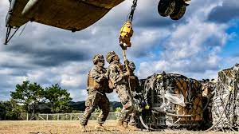
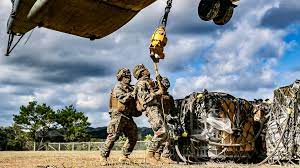

Marines, Sailors 'Build' Indo-Pacific Partnerships in Micronesia
Sept. 1, 2023 | DOD News |
Armed with saws, hammers, caulking guns and measuring tape, Marines and sailors assigned to Task Force
Koa Moana 23 demonstrated their skills while bolstering U.S. alliances in the Pacific region.


The task force has worked on a series of construction projects in several Indo-Pacific nations
over the summer. The latest was the renovation of a municipal center on the island of Yap,
Micronesia.
Officials say the mission will lead to improved health and safety for the communities which in turn will enhance U.S. relationships with its Pacific partners.
The first Koa Moana task force was in 2016. Its name comes from a Hawaiian phrase meaning 'ocean warrior.
Managing Logistics in Contested Areas Is Key to Military Success
Sept. 1, 2023| By Beth Reece , Defense Logistics Agency |
Assessing whether the right material is pre-positioned appropriately and near-optimal distribution nodes is at the heart of the Defense Logistics Agency's
efforts to posture itself for future operational challenges, DLA Vice Director Brad Bunn said Aug. 29
at the National Defense Industrial Association's Emerging Technologies for Defense Conference in Washington, D.C.
 

Future military operations are expected to occur over vast geographic areas and require the delivery of military equipment and supplies amid cyberattacks and other disruptions.
During a panel discussion, Bunn described how DLA is using artificial intelligence, advanced manufacturing and research and development to create reliable
logistics capabilities that sustain warfighters "at speed and scale."
To increase supply chain resiliency, he said DLA's inventory managers are working with industry to ensure there's ample stock to support
the initial days of a conflict and that manufacturers can surge to meet newly emerging requirements.
"We saw these risks during COVID, and we still see some fragility, some brittleness, in our industrial base," Bunn said.
Addressing cyber risks such as the attack on the Colonial Pipeline that sent DLA's fuel experts scrambling for new ways to get fuel to East Coast
customers is another component of DLA's supply chain security strategy.
It's a Military Living
Sept. 1, 2023| By Beth Reece , Defense Logistics Agency |
From working with bugs, soufflés and even superheroes, find out how much you know about the jobs military members do.
What They Do
One of the most important choices you will make when joining the military is what job you want to do.
With hundreds of jobs from which to choose, it can be very tough to narrow it down to just one.
Members of the U.S. military service maintain the U.S. national defense. Although some service members work in occupations specific to the military,
such as fighter pilots or infantrymen, many work in occupations that also exist in the civilian workplace, such as nurses, doctors, and lawyers.
Members serve in the Army, Navy, Air Force, Space Force, Marine Corps, or Coast Guard, or in the Reserve components of these branches, and in the Air National Guard and Army National Guard.
(The Coast Guard, which is included in this profile, is part of the Department of Homeland Security.)
Duties
The military distinguishes between enlisted and officer careers. Enlisted personnel make up about 82 percent of the Armed Forces and carry out military operations.
The remaining 18 percent are officers—military leaders who manage operations and enlisted personnel.
About 8 percent of officers are warrant officers, who are technical and tactical experts in a specific area. Army aviators, for example, make up one group of warrant officers.
Enlisted personnel typically do the following:
-
Participate in, or support, military operations,such as combat or training operations, or humanitarian or disaster relief
-
Operate, maintain, and repair equipment
-
Perform technical and support activities
-
Supervise junior enlisted personnel
Officers typically do the following:
-
Plan, organize, and lead troops and activities in military operations
-
Manage enlisted personnel
-
Operate and command aircraft, ships, or armored vehicles
-
Provide medical, legal, engineering, and other services to military personnel